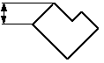
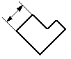

Dimension Axis command
Dimension Axis command
Sets or resets a dimension axis for a drawing or for adding PMI elements in a 3D model. A dimension axis allows you to place dimension text and dimensions that are perpendicular to or parallel to an element.
-
The default axis in a drawing is perpendicular or parallel to the horizontal axis of a drawing sheet. Dimensions placed along the default axis look like this:


-
For PMI purposes, the default dimension axis in an assembly, part, or sheet metal 3D model is the projection of the selected element onto the dimension plane.
After you set a dimension axis with the Dimension Axis command, you can use the Distance Between, Angle Between, Symmetric Diameter, or Coordinate Dimension command to place a dimension that is perpendicular or parallel to the dimension axis.
You also can set a dimension axis using the Dimension Axis button on the Dimension command bar when placing or editing a dimension.